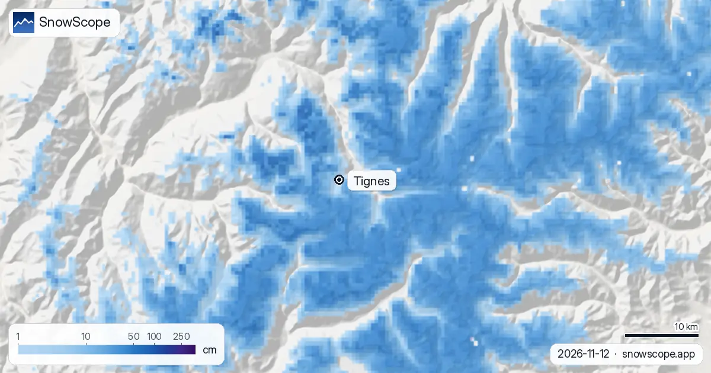

تينيي، حالة التلج: 42 سنتيمتر من جهة الجليد، وتقريبا متر جاي هاد السيمانة (13 نونبر 2026)
اللي كيقلب على حالة التلج فتينيي هاد السيمانة غادي يلقى جوج شتوات فجبل واحد. من جهة لاكراند موت، آخر تحديث ديالنا كيعطي 42 سنتيمتر فالفوق ديال التيليسييجات (3447 متر). ف 2503 متر كاين 12 سنتيمتر، تقريبا كلها طاحت فالنهار اللي فات. لتحت ف 1559 متر، تقريبا العلو ديال لي بريفيير، الأرض باقا عريانة. السيمانة الجاية تقدر تسد هاد الفرق بالزربة: 99 سنتيمتر متوقعة فالفوق و80 سنتيمتر ف 2503 متر.
شوف توقعات التلج مباشرة ديال Tignes فالتطبيق ديال SnowScopeالعلو ديال التلج، التنبيهات والخريطة 3D، فابور.
جهة الجليد، الدواوير ديال البحيرة، الواد
الفوق ديال المحطة هو الجزء اللي ولا كيبان بحال الشتا. فيه 42 سنتيمتر من بعد 14 سنتيمتر ف 24 ساعة اللي فاتت و28 سنتيمتر فالسيمانة. هادا هو القطاع ديال الجليد، اللي كتخليه تينيي للتزلج فالخريف، والتلج كيطيح تما على جليد قديم وأرض باردة: كيبقى.
الدواوير ديال البحيرة، فال كلاري وتينيي لو لاك ولو لافاشي، كاينين ف 2100 متر، بين جوج العلوات اللوطيين ديالنا. ف 2503 متر كنحسبو 12 سنتيمتر، و12 سنتيمتر اللي طاحت فالنهار اللي فات هي القصة كاملة. ف 1559 متر والو فالأرض، وهاد السيمانة طاح غير شوية. الخلاصة الصادقة ساهلة: بيض فوق البحيرات، مرقع دايرهم، خضر لتحت.
هادو تقديرات للمنطقة، ماشي عصيان فالبيستات. حفرة محمية غادي يكون فيها كثر من الرقم ديالنا، وقمة فالريح قل.

السيمانة الجاية، وفين كيدخل الشتا
جوج أيام الجايين هادئين، تقريبا 2 سنتيمتر فالفوق. العاصفة الحقيقية جاية من بعد: ف 7 أيام عندنا 99 سنتيمتر فالفوق، 80 سنتيمتر ف 2503 متر وتقريبا 32 سنتيمتر ف 1559 متر.
قبل ما ننشرو كنقارنو الأرقام ديالنا مع توقعات أخرى. للفوق هوما كثر، من 124 حتى ل 172 سنتيمتر، يعني 99 سنتيمتر ديالنا هي الجهة الحذرة. النقطة الضعيفة لتحت. الحد ديال التلج فهاد التوقعات قريب من 1700 متر، وف 1559 متر تقريبا ثلاثة أرباع ديال الما كتجي شتا. فلي بريفيير وفالطريق تسنى شتا مخلطة مع التلج، والتلج غير من 1700 متر تقريبا لفوق، وهادشي كيخلي الدواوير ديال البحيرة فالجهة المزيانة.
واش هادشي عادي فنص نونبر؟
ماشي بعد بالكامل. ف 46 شتوة اللي فاتو (1980-81 حتى ل 2025-26) نونبر عادي فيه 76 سنتيمتر فالفوق، 33 سنتيمتر ف 2503 متر و13 سنتيمتر ف 1559 متر، يعني اليوم تينيي أرق من العادة فكل علو. ولكن الفرق كبير: فالفوق نونبر من 10 فيه قل من 13 سنتيمتر ونونبر من 10 فيه كثر من 168 سنتيمتر.
التلج كيجي بكري هنا. أول تلج كيبقى كيطيح فالفوق تقريبا نهار 28 شتنبر فشتوة متوسطة، ف 2503 متر نهار 5 أكتوبر وف 1559 متر نهار 22 أكتوبر. دجنبر عادي كيطلع من بعد ل 161 سنتيمتر فالفوق، 80 سنتيمتر ف 2503 متر و42 سنتيمتر لتحت. إلا جات العاصفة ديال هاد السيمانة قريبة من التوقع، تينيي كتنقز مرة وحدة من تحت العادي للعلو ديال دجنبر ف 2503 متر.
علاش تينيي رهان مضمون من جهة العلو
العلو هو السبب اللي كيخلي الناس يختارو تينيي لرحلة بكري ولا معطلة فالموسم. فالفوق الأرض كتبقى بيضا 241 نهار فشتوة متوسطة، وف 2503 متر 234 نهار. ف 2503 متر، 21 سيمانة من الشتوة فيهم 50 سنتيمتر ولا كثر ف 9 من 10 شتوات، وفالفوق 25 سيمانة.
الصورة الطويلة ماشي مستوية، والتخبية ديالها ماشي صدق. القمة المتوسطة فالفوق كانت 401 سنتيمتر ف 15 شتوة الأولى ديال السلسلة ديالنا و377 سنتيمتر ف 15 الأخيرة؛ والأيام ديال التلج فالفوق نزلو من 267 ل 237. الشتوة اللي فاتت وصلات ل 310 سنتيمتر فالفوق، 222 سنتيمتر ف 2503 متر و141 سنتيمتر ف 1559 متر. المنطقة المرسومة ديال تينيي - فال ديزير فيها 211 كيلومتر ديال البيستات و84 تيليسييج، يعني كاين بزاف ديال البلايص ملي يتعمر النص اللوطي.
نصايح للي كيتزلجو
- القطاع ديال الجليد كيتحل هو الأول: شوف الصفحة ديال الفتح ديال المحطة قبل ما تحجز ويكاند فنونبر.
- تحت 1700 متر تقريبا هاد السيمانة، حسب حساب الشتا ولا التلج المبلول فالطريق وهز السناسل ولا بنو ديال الشتا.
- متر ديال التلج الجديد فوق قاعدة رقيقة كيخبي الحجر وكيصاوب صفائح: قرا البلاغ ديال ميتيو فرانس قبل أي خروج على البيست.
خرائط أخرى (مواقع خارجية)
المراجع والمصادر
- تينيي، الموقع الرسمي (التيليسييجات، تواريخ الفتح، حالة البيستات) www.tignes.net/
- ويكيبيديا، تينيي (الدواوير، العلوات، التزلج على الجليد)، متشافة نهار 13 نونبر 2026 en.wikipedia.org/wiki/Tignes
- ميتيو فرانس، الطقس ديال الجبل والبلاغات ديال الانهيارات meteofrance.com/meteo-montagne
على هاد الأرقام
الأرقام ديال التلج: الموديل ديال التلج ديال SnowScope، الحساب ديال 12 نونبر 2026 محدث نهار 13 نونبر، فتلاتة ديال العلوات فالمحطة ديال تينيي - فال ديزير (تقدير للمنطقة، ماشي قياسات ديال المحطة). الفرق ديال السيمانة والحد ديال التلج: التوقعات المستقلة اللي كنقارنو معاها قبل النشر (ECMWF, ICON, GFS, GEM). التاريخ: 46 شتوة اللي فاتت (1980-81 حتى ل 2025-26)، موديل ديال اللي فات مصحح بالعلو. العلو ديال الدواوير والموسم: ويكيبيديا، متشافة نهار 13 نونبر 2026. الطول ديال البيستات وعدد التيليسييجات: OpenSkiMap. التوقعات كتبدل: شوف الخريطة قبل ما تمشي.
النشرات الرسمية ديال الانهيارات: Météo-France – Bulletin d'estimation du risque d'avalanche
كيفاش تستاشهد بهاد المقال
للبحث، التعليم ولا الصحافة: الأرقام والرسومات تقدر تعاود تخدم بيهم بحرية تحت CC BY 4.0 مع هاد الاستشهاد.
SnowScope (2026), تينيي، حالة التلج: 42 سنتيمتر من جهة الجليد، وتقريبا متر جاي هاد السيمانة (13 نونبر 2026), https://snowscope.app/blog/ar/2026/11/tignes-snow-conditions-13-november-2026.html, تشاف ف 2026-11-13
SnowScope (Atlas Labs). (2026, November 13). تينيي، حالة التلج: 42 سنتيمتر من جهة الجليد، وتقريبا متر جاي هاد السيمانة (13 نونبر 2026). SnowScope snow reports. https://snowscope.app/blog/ar/2026/11/tignes-snow-conditions-13-november-2026.html
BibTeX
@misc{snowscope2026tignessnowconditions13no,
author = {{SnowScope (Atlas Labs)}},
title = {تينيي، حالة التلج: 42 سنتيمتر من جهة الجليد، وتقريبا متر جاي هاد السيمانة (13 نونبر 2026)},
year = {2026},
month = nov,
howpublished = {\url{https://snowscope.app/blog/ar/2026/11/tignes-snow-conditions-13-november-2026.html}},
note = {Published 2026-11-13 11:00 UTC; accessed 2026-11-13}
}· CC BY 4.0 · الطريقة، الداتا والأدوات →
Tignes: التلج والحرارة حسب العلو، هاد الشتا مقارنة مع اللي فاتت (الأدوات) →
تابع Tignes
فابور: ميساج ملي يجي التلج، والتوقعات كل صباح.
تقارير أخرى ديال التلج

واش الغطا ديال التلج من Écrins حتى للألب البحرية و Piemonte غيتعمر بحال العادة فدجنبر 2026؟ التوقع الموسمي الأوروبي والخريطة ديالنا، جبل بجبل.

التلج ديال اليوم فليفينيو، شنو كيقول التوقع الموسمي الأوروبي على دجنبر، وعلاش العلو كيغلب الشهر السخون نهار 25 دجنبر.